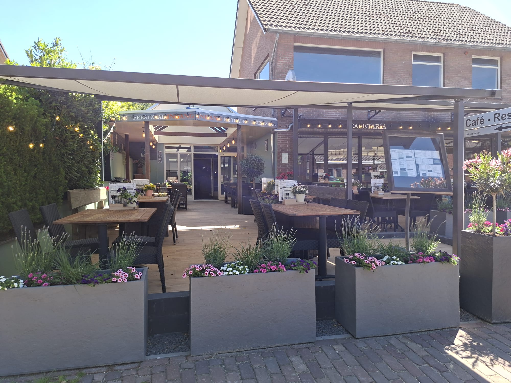

Eetcafé
Kies iets van de menukaart, met voor ieder wat wils, of ga voor het speciale keuzemenu. Iets te vieren, of gewoon omdat het weer kan? Kom 3 uur lang onbeperkt steengrillen met het steengrillen all-inclusive.
- Menukaart met lunch, salades, vlees, vis en vega
- Steengrillen en de reuzekoekenpan
- Gezellig aan de bar, met live-muziek of karaoke
Open: wo t/m za vanaf 16.30 uur, zo vanaf 12.00 uur. Ma en di gesloten.
Voor een bezoek aan het eetcafé graag reserveren.
Reserveer in het eetcafé
Voor een bezoek aan het eetcafé graag reserveren.